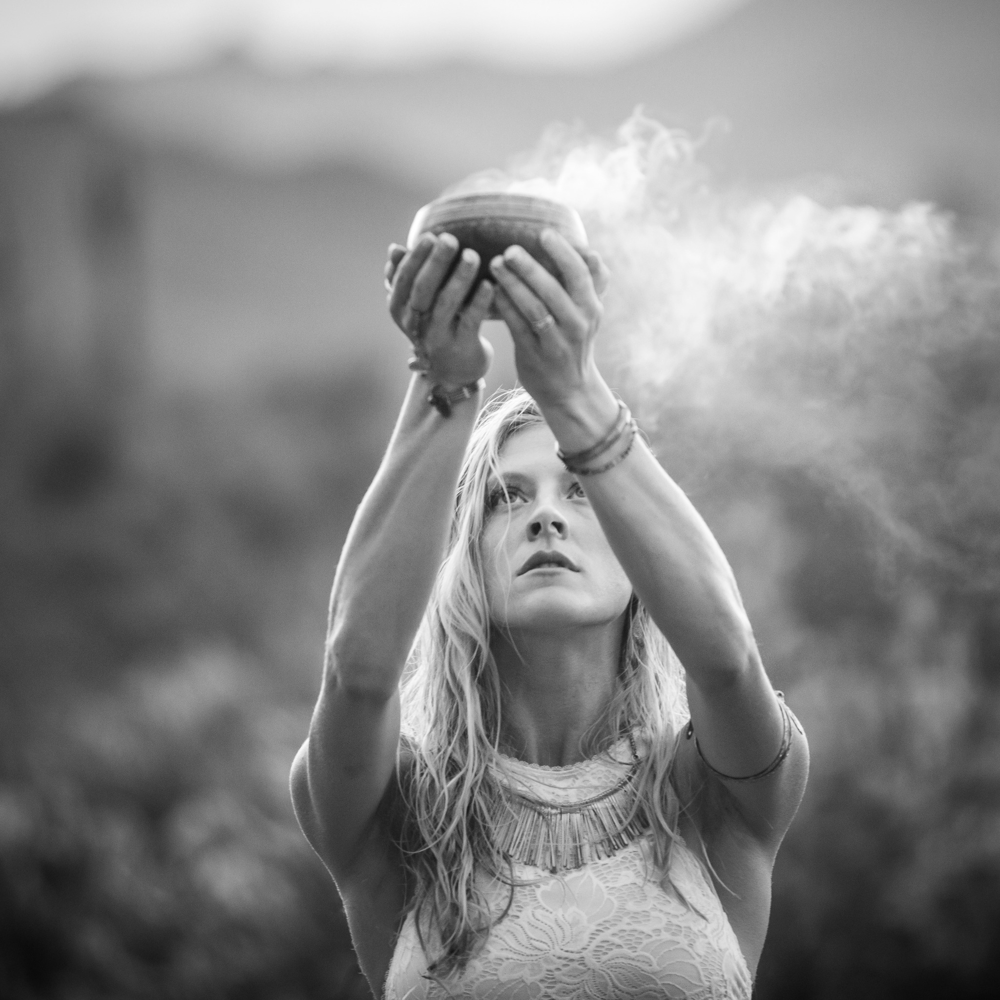

September 28, 2026 · The Grove · Aspen
Echoes
of the Soul
A ceremonial evening of rhythm, movement and vibrational medicine at The Grove—beginning with embodied expression and flowing into stillness, resonance and an expansive guided inner journey.
6:00 PM · 1 Tribal Ecstatic DanceAn embodied opening through rhythm, freedom and movement.
7:30 PM · Sound JourneyA Healing Rituals immersion in layered sound and vibrational medicine, carrying the body from movement into deep receiving.
Arrive in time to settle before the 6:00 PM dance. The sound journey begins at 7:30 PM.
Reserve your space
The Grove · AspenReserve your place
Join Us for
Echoes of the Soul
Space is limited. Send your reservation request and let us know whether you would like a yoga mat, blanket and eye mask prepared for your journey.
Your place is confirmed when the Healing Rituals team replies to your request.
Private events · collaborations · retreats
Bring Healing Rituals Into Your Gathering
Vibrational medicine, sound, energy clearing and guided journeys can be created for private retreats, intimate celebrations, wellness gatherings and aligned collaborations in Aspen and the Roaring Fork Valley.
Begin an event inquiry